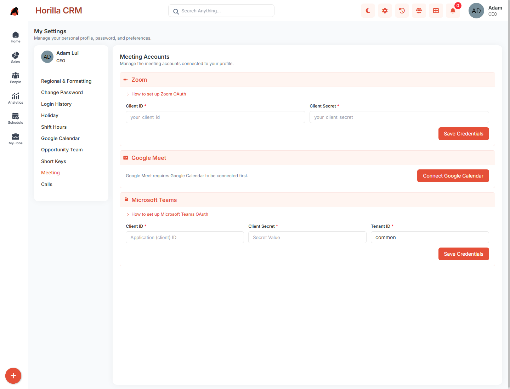
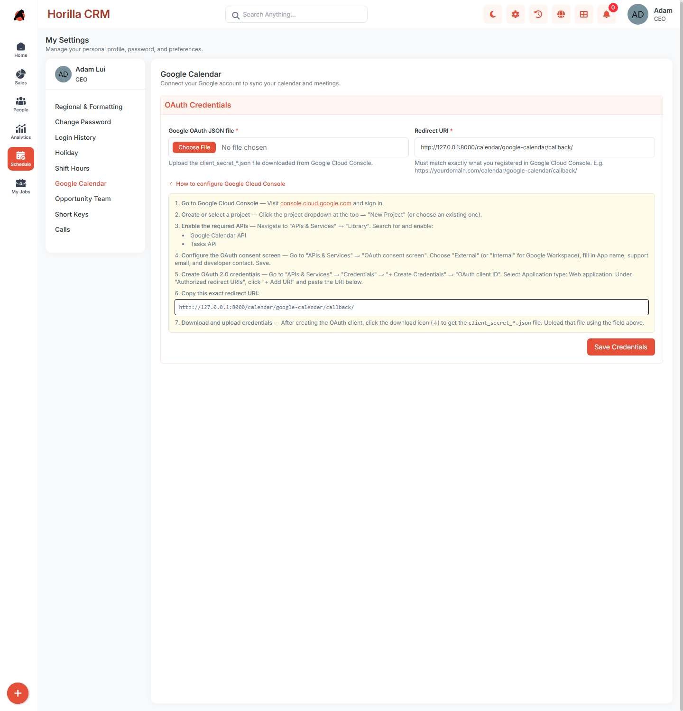
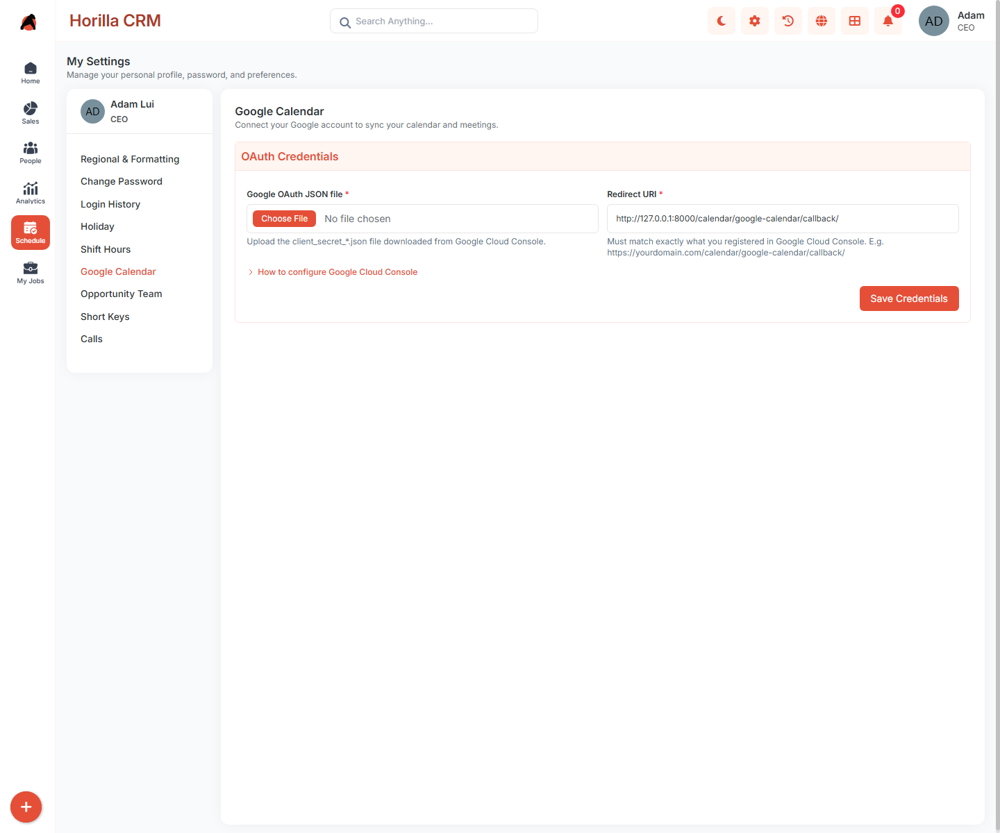

Introduction
The Google Calendar integration synchronises CRM Activities and Unavailability blocks with a user's Google Calendar in near real time. It authenticates through OAuth 2.0 and relies on Google push notifications, which makes the connection both secure and responsive.
Google Calendar Integration
Company setup is covered in Google Calendar Sync.
Meeting Accounts
Go to My Settings → Meeting. The page title is Meeting
Accounts. The description is Manage the meeting accounts connected to your
profile.
This page is shown when an administrator has enabled meeting integration for
the company.

| Account | On this page |
|---|---|
| Zoom | How to set up Zoom OAuth opens the setup notes. Client ID placeholder: your_client_id. Client Secret placeholder: your_client_secret. Save Credentials stores them. |
| Google Meet |
The card reads Google Meet requires Google Calendar to be connected first.Connect Google Calendar opens My Settings → Google Calendar, covered below. |
| Microsoft Teams | How to set up Microsoft Teams OAuth opens the setup notes. Client ID placeholder: Application (client) ID. Client Secret placeholder: Secret Value. Tenant ID opens as common. Save Credentials stores them. |
Google Cloud Console Setup
On My Settings → Google Calendar, open How to configure Google Cloud Console. The panel lists the one-time setup in Google Cloud and the redirect URI to register.

- Open console.cloud.google.com and sign in.
- Create a project from the project dropdown, or select an existing one.
- In APIs & Services → Library, enable Google Calendar API and Tasks API.
- On the OAuth consent screen, choose External, or Internal for Google Workspace. Enter the app name, support email and developer contact, then save.
-
In Credentials, choose + Create Credentials → OAuth client
ID. Set the application type to Web application. Under Authorized redirect URIs, add the URI shown in Horilla. It ends in
/calendar/google-calendar/callback/. -
Download the
client_secret_*.jsonfile and upload it in the field above the panel.
User: Connect Google Calendar
Open My Settings → Google Calendar. The page title is Google
Calendar. The description is Connect your Google account to sync your calendar
and meetings.
Upload credentials
The OAuth Credentials section is shown until a credentials file is saved. Choose the Google OAuth JSON file, check that Redirect URI matches the URI registered in Google Cloud, then click Save Credentials.

Authorize
After the credentials are saved, the page shows Connect Google Account. Completing the Google consent for Calendar, Tasks and email returns to Horilla, and the page shows the connected email address.
Sync direction
Sync direction appears after the account is connected.
- One-way: Horilla CRM → Google — Horilla CRM activities are pushed to Google Calendar. Changes made in Google are ignored.
- Two-way: Horilla CRM ↔ Google — changes sync in both directions.
What gets synced
- An Activity of type Task becomes a Google Task in the default list.
- An Activity of type Event or Meeting becomes a Google Calendar event.
- An Unavailability block becomes a Google Calendar event.
- With two-way sync, items created, updated or deleted in Google Calendar are synced back to Horilla. Events that Horilla itself created, and Google system events such as birthdays, are excluded.
Real-time push notifications
With two-way sync, the connection page shows the webhook status. Register Webhook is available when the site is opened over HTTPS. On HTTP or localhost the status says the app must be opened over HTTPS.
Disconnect
After the account is connected, Disconnect is on the same My Settings → Google Calendar page, beside the webhook button. Disconnecting stops the push notification channel, clears the OAuth tokens and resets the sync state. The uploaded credentials file is kept so reconnecting is quicker.
Additional Recommendations
- Use two-way sync only where it is genuinely needed; one-way sync gives more control and avoids unintended overwrites.
- Do not create the same event manually in both systems — let the integration do the syncing.
-
Keep the
client_secret_*.jsonfile private, and regenerate the credentials if it may have been exposed. - Use HTTPS in production and check the webhook status on the Google Calendar page.